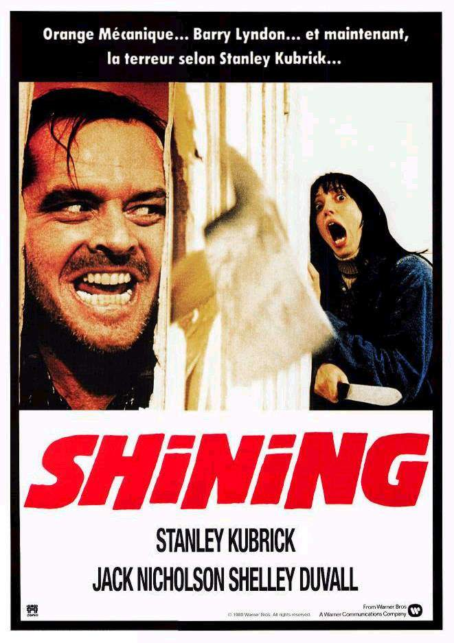

Чего больше всего написал Стивен Кинг?
- Рассказы - 140
- Рассказы в авторских сборниках
- Рассказы в романах и повестях
- Рассказы вне сборников
- Романы - 64
- Под своим именем
- Под псевдонимом Ричард Бахман
- Повести - 35
- Стихи - 15
- Пьесы - 2
- Сценарии - 2

Романы
| Дата публикации | Название | Дата выхода экранизации | Постер |
|---|---|---|---|
| 1974 | Кэрри | 1976, 2002, 2013 |  |
| 1975 | Жребий Салема | 1979, 2004 |  |
| 1977 | Сияние | 1980, 1997 |  |
| 1978 | Противостояние | 1994, 2020 |  |
| 1979 | Мертвая зона | 1983, 2002, 2007 |  |
| 1980 | Воспламеняющая взглядом | 1984 |  |